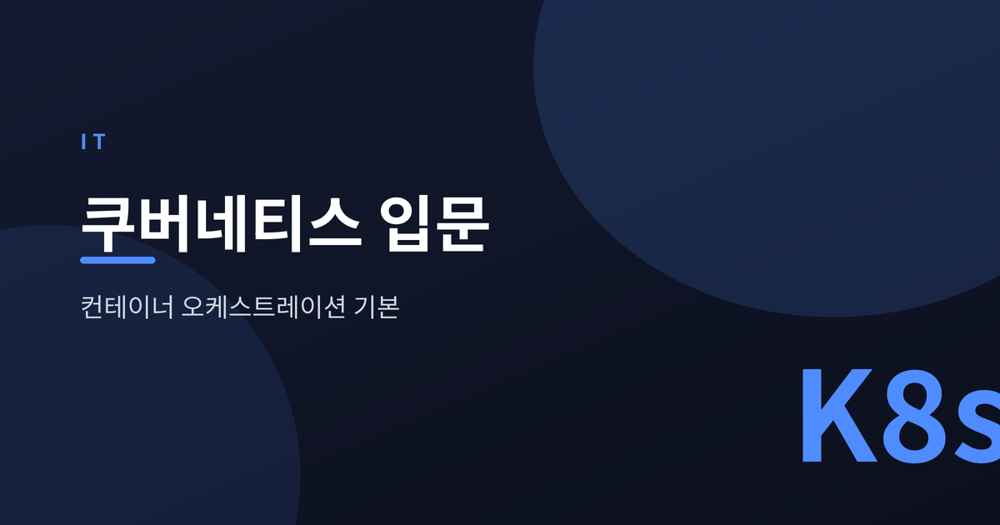
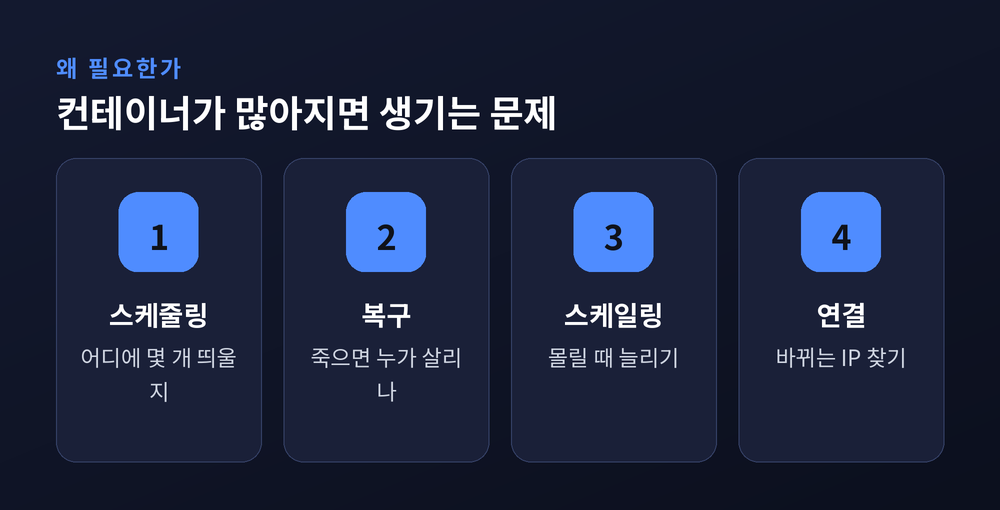
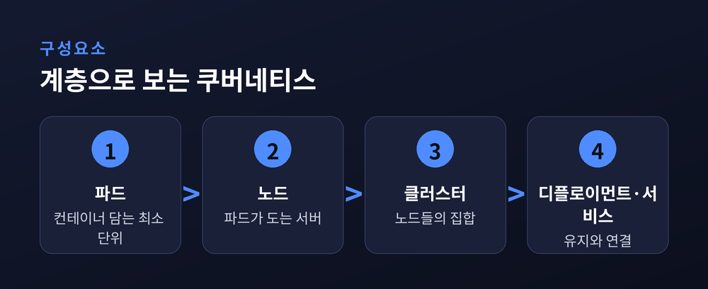
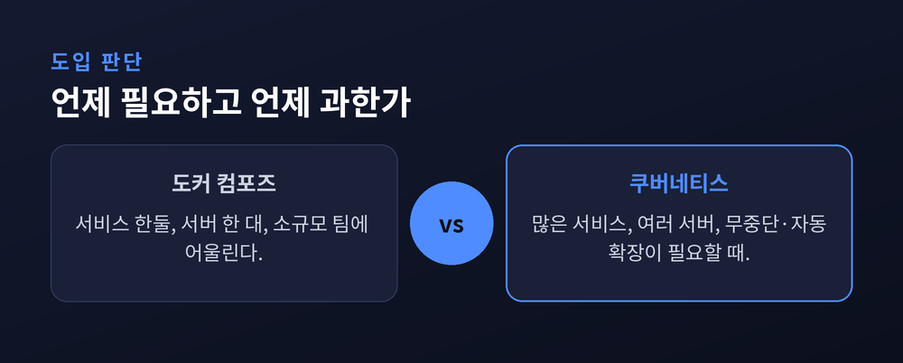

컨테이너 오케스트레이션의 기본 개념

이번 글에서는 쿠버네티스의 기본 개념을 정리해 보겠습니다. 컨테이너는 익숙한데 쿠버네티스는 어렵게 느껴지는 분들을 위해 준비했습니다. 결론부터 말씀드리면, 쿠버네티스는 "흩어진 컨테이너를 대신 관리해 주는 시스템"입니다.
컨테이너는 애플리케이션과 실행 환경을 한 덩어리로 묶어 격리해 실행하는 단위입니다. "제 컴퓨터에선 됩니다"라는 오랜 골칫거리를 줄여주죠. 도커는 그 컨테이너를 만들고 띄우는 대표 도구입니다.
컨테이너가 몇 개일 때는 도커만으로 충분합니다. 문제는 그다음입니다.
예전엔 서버 한 대에 컨테이너 몇 개면 끝이었습니다. 지금은 수십, 수백 개의 컨테이너가 여러 서버에 흩어져 돌아갑니다. 이걸 손으로 관리하기란 사실상 불가능에 가깝습니다.

컨테이너 오케스트레이션이란 컨테이너의 배포와 관리를 자동화하는 체계를 말합니다. 쿠버네티스는 구글의 내부 시스템 경험에서 출발해 지금은 사실상 표준이 된 오케스트레이션 도구입니다.
핵심 설계 사상은 하나로 요약됩니다 — 선언형입니다. "이렇게 실행해라"가 아니라 "이런 상태였으면 한다"를 명세하면, 쿠버네티스가 현재 상태를 계속 그 목표에 맞춥니다.
관리자는 목표를 적을 뿐, 그 상태를 유지하는 일은 시스템이 맡는 셈입니다.
용어가 많아 보이지만, 계층으로 보면 단순합니다.
| 구분 | 역할 |
|---|---|
| 파드(Pod) | 컨테이너를 담는 가장 작은 배포 단위 |
| 노드(Node) | 파드가 실제로 도는 서버 한 대 |
| 클러스터(Cluster) | 여러 노드를 묶은 전체 환경 |
| 디플로이먼트(Deployment) | 파드를 몇 개 유지할지 선언·관리 |
| 서비스(Service) | 바뀌는 파드 앞의 고정된 접점 |
파드는 컨테이너를 담는 그릇이고, 노드는 그 파드가 올라가는 서버입니다. 노드가 여럿 모이면 클러스터가 됩니다. 디플로이먼트는 "이 앱을 파드 3개로 유지해라" 같은 목표를 담고, 서비스는 파드의 IP가 계속 바뀌어도 요청이 길을 잃지 않게 안정적인 주소를 제공합니다.

쿠버네티스의 진짜 매력은 여기에 있습니다.
첫째, 자가치유입니다. 파드가 죽으면 자동으로 다시 만듭니다. 노드가 통째로 멈추면 다른 노드로 옮겨 되살립니다. 상태 점검으로 살아있는지, 트래픽 받을 준비가 됐는지를 계속 확인합니다.
둘째, 오토스케일링입니다. HPA는 CPU 사용률 같은 지표를 보고 파드 개수를 자동으로 조절합니다. 기본적으로 약 15초마다 지표를 확인하고, 목표 대비 ±10% 안이면 그대로 두고 벗어나면 개수를 늘리거나 줄입니다. 새벽엔 줄이고 트래픽이 몰리면 늘리는 일이 사람 손 없이 돌아갑니다.
여기서 균형을 잡아야 합니다. 쿠버네티스는 강력하지만, 늘 정답은 아닙니다.
서비스가 한둘이고 서버 한 대로 충분하다면, 그리고 전담 인력이 없다면 도커 컴포즈가 더 어울립니다. 배포 중 잠깐의 멈춤을 감내할 수 있다면 더욱 그렇습니다.
반대로 서비스가 수십 개로 늘고, 여러 서버에서 무중단·자동 확장·자가치유가 실제로 필요해지는 순간이 옵니다. 그때가 쿠버네티스의 자리입니다.
솔직히 학습 곡선은 가파릅니다. 운영 복잡도와 비용도 만만치 않습니다. "쓸 수 있다"와 "지금 필요하다"는 분명히 다른 이야기입니다.

정리하면 이렇습니다. 쿠버네티스는 흩어진 컨테이너를 대신 관리하며, 원하는 상태를 스스로 유지하는 시스템입니다. 파드·노드·클러스터·디플로이먼트·서비스라는 계층과, 자가치유·오토스케일링이라는 두 축만 잡으면 큰 그림은 완성됩니다.
"도구의 힘보다 중요한 것은, 그 힘이 지금 필요한지를 묻는 일입니다."
쿠버네티스를 당장 써야 하냐고 물으신다면, 저는 먼저 규모부터 헤아려 보시길 권합니다.